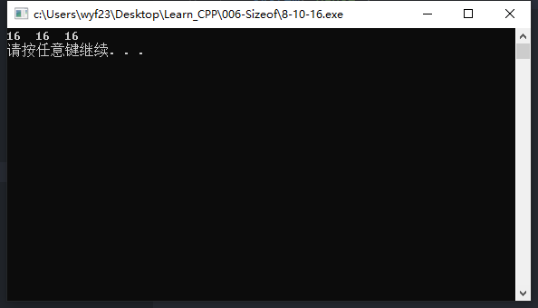
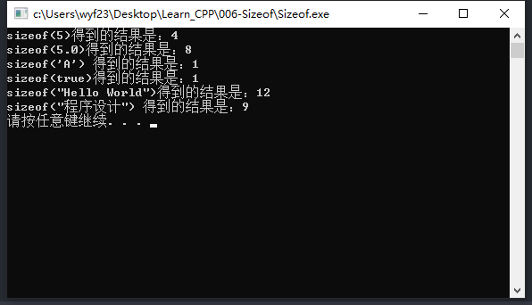
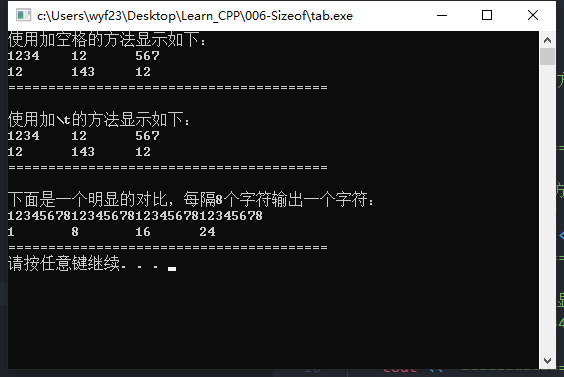

数据类型
数学中的数据类别
- 不同的性质
- 不同的运算
计算机中的数据类型
- 不同的表示形式
- 不同的存储控件
- 不同的运算
1. 整数
| 类型 | 表示类型的符号 | 字节数 | 数值范围 |
|---|---|---|---|
| 整型 | int | 4 | $-2^{31}(-2147483648)$ ~ $2^{31}-1(2147483647)$ |
| 短整型 | short或short int | 2 | $-$32768 ~ 32767 |
| 长整型 | long或long int | 4 | $-2^{31}$ ~ $2^{31}-1$ |
| 无符号整型 | unsigned [int] | 4 | 0 ~ $2^{32}$-1 |
| 无符号短整型 | unsigned short [int] | 2 | 0 ~ 65535 |
| 无符号长整型 | unsigned long [int] | 4 | 0 ~ $2^{32}$-1 |
- 表示的数较小，就用短整型。
- 表示的数比较大，就用整型或长整型。
- 表示的数均是非负数，就用无符号型。
不同类型的数所占的字节数
- C++没有规定不同类型的数占的字节数；
- 会因计算机系统、编译器的不同而不同；
sizeof()运算符测试某类型数所占字节数；
1
2
3
4cout << sizeof(int) << endl; //整型数的字节数
cout << sizeof(short int) << endl;
cout << sizeof(short) << endl; //短整型数的字节数
`- 方括号表示可选，如unsigned[int]
- 表示使用unsigned int可以；
- 表示使用unsigned也可以；
2. 实数
IEEE754标准 该标准有两种格式
- 分为单精度和双精度
单精度（类型名：float）
- 4字节，$±3.4×10^{-38}$ ~ $±3.4×10^{38}$，单精度浮点型
双精度（类型名：double）
- 8字节，$±1.8×10^{-308}$ ~ $±1.8×10^{308}$，双精度浮点型
数的书写
- 整数型，一个数不带小数点，可以带正负号，计算机认为这是整型数。如：
1，12，+123，-1234 - 16进制整数，前缀0X（X大小写均可），如：
0xFF，0x10，0XFF，-0X10，-0X21 - 8进制整数，前缀0，如：
010，021，-010，-021 - 10进制，16进制，8进制，没小数点，都是整型
16，0x16，020在计算机中存的都是16这个数
示例代码
1
2
3
4
5
6
7
using namespace std;
int main()
{
cout << 16 << " " << 0x10 << " " << 020 << endl;
system("pause");
}运行结果

- 无符号整型数，加后缀U或u，如：
- 1U，12U，123U，2019U；
- 无符号数，就意味着可以写绝对值更大的数；
- 双精度数
- 数据带小数点
- 小数形式：1.0，1.，0.1，.1；【0可以不写，但是小数点必须写】
- 指数形式：
a. $1.2E-2$表示$1.2×10^-2$
b. $1.2e+2$表示$1.2×10^2$
c. $-1.2E2$表示$-1.2×10^2$
- 单精度数
- 带小数点，加后缀F或f，如：
12.5F，1.25E-2F，-12.5f
- 带小数点，加后缀F或f，如：
- 整数型，一个数不带小数点，可以带正负号，计算机认为这是整型数。如：
3. 字符
- 单个字符的表示，将字母写在一堆单引号中表示字符，如：
‘A’，’B’，’C’，’a’，’b’，’c’，’0’，’1’，’2’，’3’，’#’，’$’，’%’ - 每个字符占一个字节，保存英文字符的ASCII码
- 注意：
- ‘a’和a是不一样的
- ‘0’和0是有本质区别的
- ‘0’，是字符，1字节，存ASCII码为48，二进制00110000
- 0，是整数，4字节，存的是0，二进制0000…0（32个0）
- 可以参与整型数能进行的运算，如’a’+1
- char
取值范围-128 ~ 127 - unsigned char
数值范围0 ~ 255
4. 字符串
- 连续的多个字符
- 字符串写在一对双引号之间，如：
“Hello World”
“程序设计” 字符串占的字节数等于字符串长度+1
注:汉字保存的是机内码，一个汉字占2个字节。- “Hello World”，长度11（10个字母+1个空格），占12字节；
- “程序设计”，长度8（4个汉字8字节），占9个字节；
- 为什么+1？
末尾加了一个结束符，用’\0’表示，数值上是01 2 3 4 5 6 7 8 9 10 11 12 H e l l o W o r l d '\0'
空字符与空格
- 空字符：表示为’\0’，是什么也没有，ASCII码值为0；
- 空格：表示为’ ‘，占1个字符位置，不显示任何东西，ASCII码值为32；
5.逻辑型（布尔型，bool）
- 表示“真”，“假”这样判断的结果
- 取值
true，表示“真”
false，表示“假” - 例如
1>5，是“假”，false
2<6，是“真”，true - 存储
true，存的是1
false，存的是0 - 非0数值，当逻辑值相当于true
- 数值0，当作逻辑值相当于false
逻辑型数据存放的实际也是整数，可以进行数学运算
基本数据类型的类型说明符
类型 类型名类型说明符 类型 类型名类型说明符 整型 int 短整型 short或short int 单精度 float 长整型 long或long int 双精度 double 无符号整型 unsigned[int] 字符 char 无符号短整型 unsigned short[int] 逻辑/布尔 bool 无符号长整型 unsigned long[int] 如何知道不同的输占的字节数
- sizeof(<类型名>) //类型占字节数
- sizeof(<数据>) //数据占字节数
示例代码
1
2
3
4
5
6
7
8
9
10
11
12
13
using namespace std;
int main()
{
cout << "sizeof(5)得到的结果是：" << sizeof(5) << endl;
cout << "sizeof(5.0)得到的结果是：" << sizeof(5.0) << endl;
cout << "sizeof('A') 得到的结果是：" << sizeof('A') << endl;
cout << "sizeof(true)得到的结果是：" << sizeof(true) << endl;
cout << "sizeof(\"Hello World\")得到的结果是：" << sizeof("Hello World") << endl;
cout << "sizeof(\"程序设计\") 得到的结果是：" << sizeof("程序设计") << endl;
system("pause");
return 0;
}运行结果

6. 转义字符
- 有些ASCII码符号是不可显示的，如：
换行符，回车符，退格符，水平制表符等 - 有些符号是有特殊意义的，如：
比如单引号、双引号、反斜杠等 - 用一个反斜杠和一个字母（或数字）表示，它也是1个字符，如：
- \n 表示换行符
- \r 表示回车
- \b 表示退格
- \t 表示水平制表符
- \’ 表示单引号
- \” 表示双引号
- \0 表示空字符
比如：
1
2cout << '\'';//显示单引号
cout << '\"';//显示双引号将”Hello World”显示到两行上
可以写：
1
2cout << "Hello" << endl;
cout << "World" << endl;可以写：
1
cout << "Hello" << endl << "World" << endl;
可以写：
1
cout << "Hello \nWorld" << endl;
水平制表符\t
显示如下像表格一样可以对齐的多行内容
1234 12 567 12 143 12 可以：（加空格）
1
2cout << 1234 << " " << 12 << " " << 567 << endl;
cout << 12 << " " << 143 << " " << 12 << endl;可以：
1
2cout << 1234 << "\t" << 12 << "\t" << 567 << endl;
cout << 12 << "\t" << 143 << "\t" << 12 << endl;测试代码
1
2
3
4
5
6
7
8
9
10
11
12
13
14
15
16
17
18
19
20
21
using namespace std;
int main()
{
cout << "使用加空格的方法显示如下：" << endl;
cout << 1234 << " " << 12 << " " << 567 << endl;
cout << 12 << " " << 143 << " " << 12 << endl;
cout << "========================================" << endl;
cout << endl;
cout << "使用加\\t的方法显示如下：" << endl;
cout << 1234 << "\t" << 12 << "\t" << 567 << endl;
cout << 12 << "\t" << 143 << "\t" << 12 << endl;
cout << "========================================" << endl;
cout << endl;
cout << "下面是一个明显的对比，每隔8个字符输出一个字符：" << endl;
cout << "12345678123456781234567812345678" << endl;
cout << 1 << "\t" << 8 << "\t" << 16 << "\t" << 24 << endl;
cout << "========================================" << endl;
system("pause");
return 0;
}运行结果
